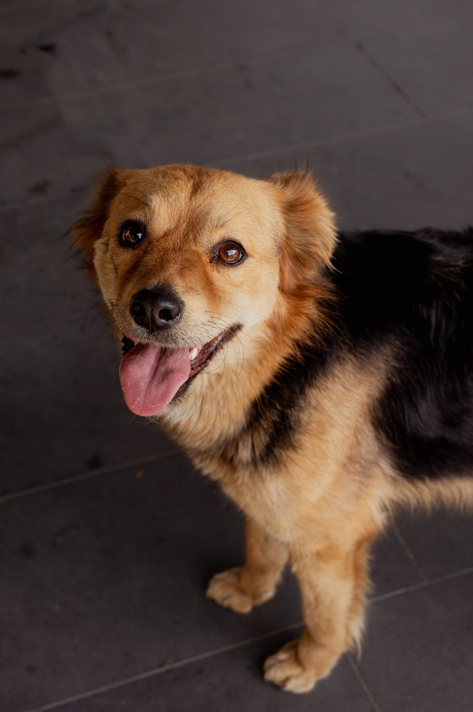

Tanış
Sahiplen sayfasında türe, yaşa ve şehre göre arama yap, sana uygun dostu bul.
Patili Yuva'da kedi, köpek, kuş ve tavşan dostlarımız sıcak bir yuva bekliyor. Onlarla tanış, favorilerine ekle ve tek bir formla sahiplenme başvurunu yap.
Patileri Tanı
Sahiplen sayfasında türe, yaşa ve şehre göre arama yap, sana uygun dostu bul.
Kartındaki "Sahiplen" butonuna bas, başvuru formunu doldur.
Gönüllülerimiz seninle iletişime geçer, tanışma gününü birlikte planlarız.
Hayır. Patili Yuva'daki bütün dostlarımız ücretsiz sahiplendirilir.
Evet. Başvuru formunda şehrini belirtmen yeterli, ulaşım konusunu birlikte planlarız.
Her kartta aşı durumu yazar. Yavruların aşı takvimi sahiplendikten sonra da devam eder.